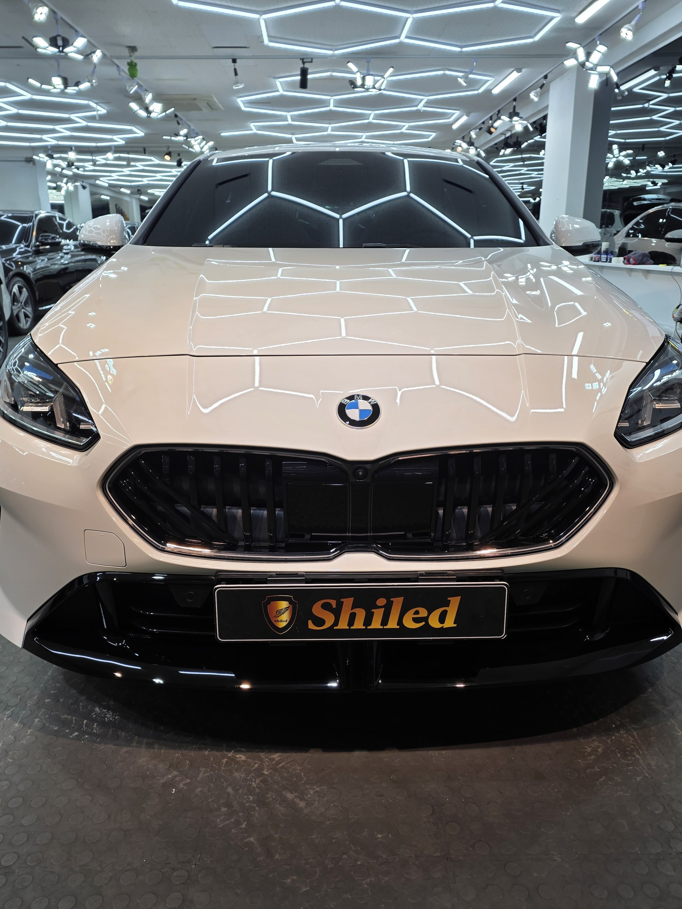
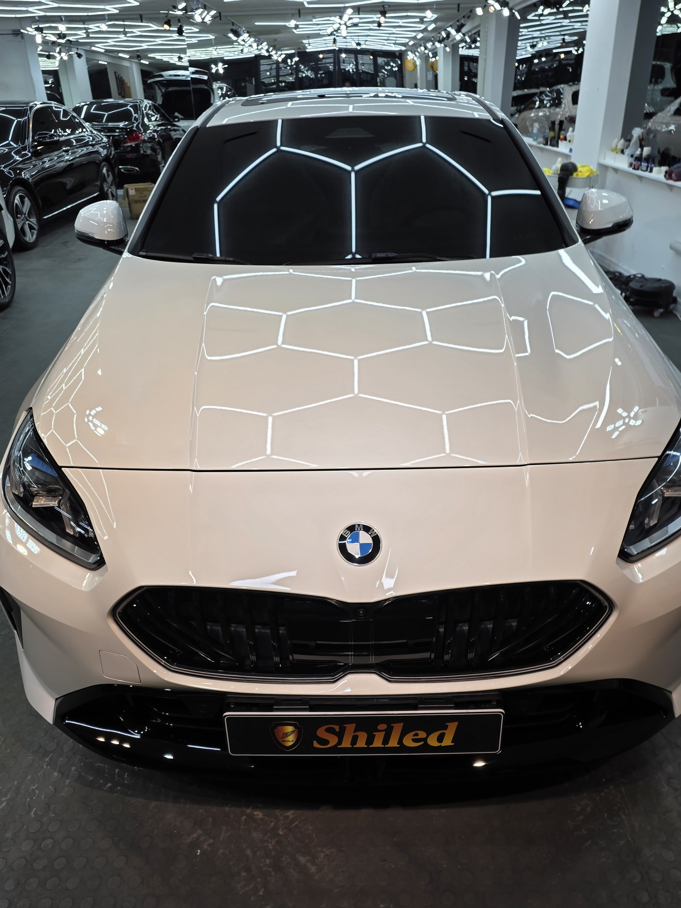
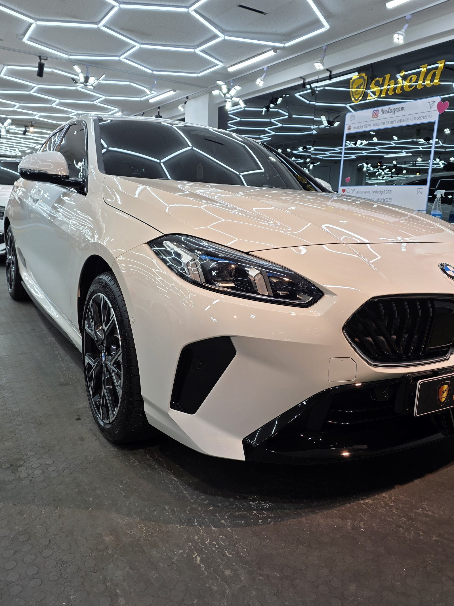
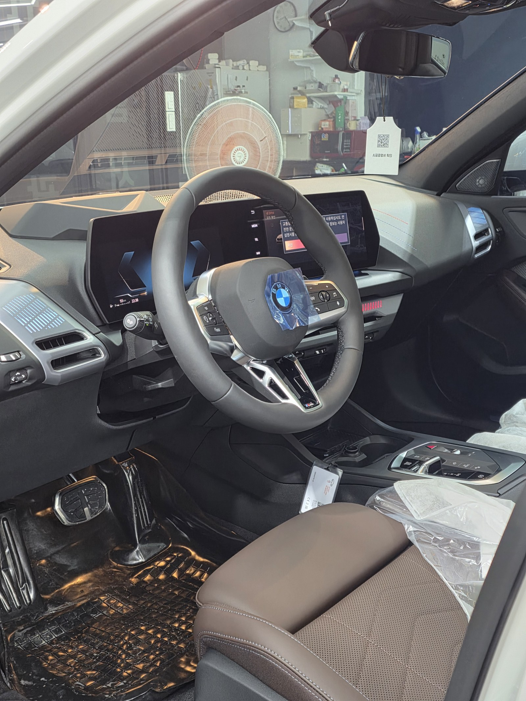
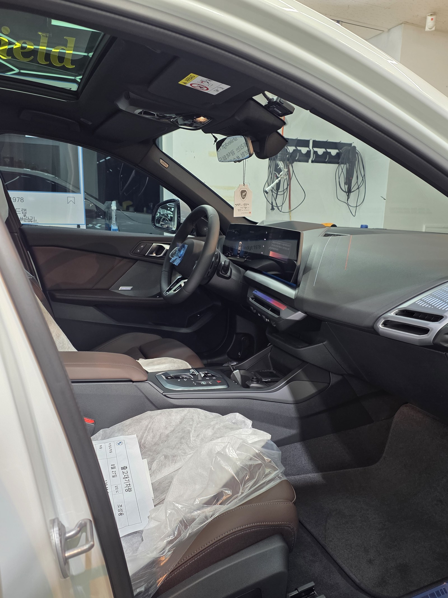
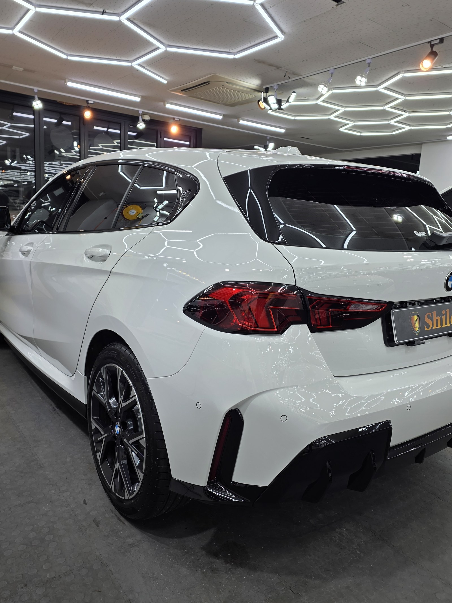
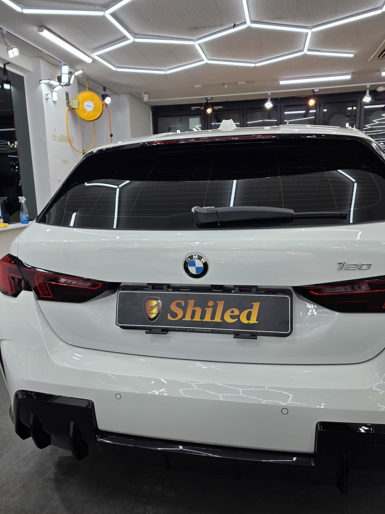
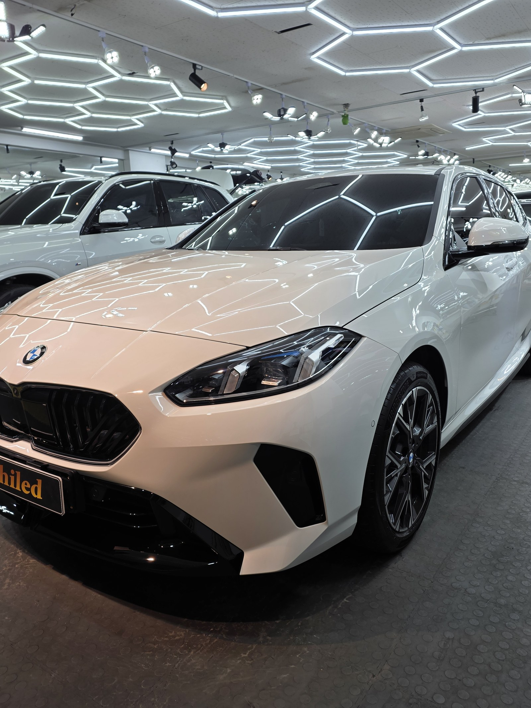
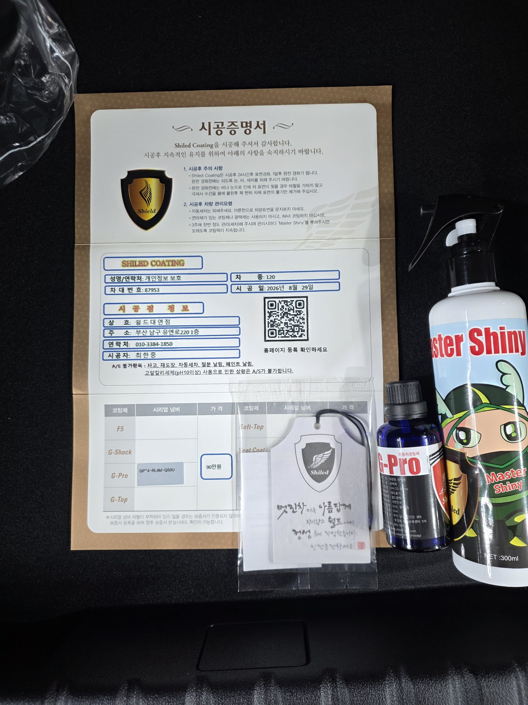

BMW 120 백색입니다.
1시리즈 해치백, 아직 출고 전 대기 상태인 새 차입니다.
이 차는 부산 유리막코팅으로, 출고 전에 G-PRO를 올렸습니다.

새 차인데 왜 출고 전에 코팅을 하나
도장면이 가장 깨끗할 때 올리는 코팅이 가장 오래갑니다.
출고 후에는 운행과 세차로 미세한 잔기스와 오염이 쌓이기 시작합니다. 그게 쌓이기 전, 신차 상태 그대로일 때 코팅막을 입혀두는 겁니다. 특히 120처럼 데일리로 자주 타는 소형 해치백은 주차·통행 중 스침이 잦습니다. 그래서 쉴드광택은 출고 전 신차 시공을 맡아 진행합니다.

왜 F5가 아니라 G-PRO인가
G-PRO는 저희 제품 중 경도가 가장 높은 하드코팅입니다.
스크래치 내성과 내구성에 특화돼 있습니다. F5가 발색 깊이와 글로시함을 끌어올리는 데 강점이 있다면, G-PRO는 단단하게 오래 버티는 쪽에 특화된 코팅입니다. 매일 타고 다니며 생기는 잔기스와 세차 흠집을 견뎌야 하는 실사용 신차에는 G-PRO 쪽이 더 맞습니다. 이 차주분도 화려한 발색보다 내구성을 우선하셨습니다.
기술자의 팁
백색은 검정만큼 발색을 따질 일이 적습니다. 대신 잔기스와 세차 흠집이 눈에 잘 띕니다. G-PRO의 높은 경도가 바로 여기서 값을 합니다.

코팅 전, 전처리가 9할입니다
신차라고 바로 코팅을 올리지 않습니다.
운송과 보관 중 묻은 미세 오염을 디테일링 세차로 걷어내고, 탈지까지 끝낸 뒤에야 코팅을 올릴 면이 됩니다. 새 차라도 이 과정은 생략하지 않습니다. 깨끗한 바탕 위에 올려야 G-PRO의 단단한 막이 제대로 밀착합니다.
외부만이 아니라 안까지
출고 전 차량은 안팎 컨디션을 함께 확인합니다.
실내는 아직 시트와 스티어링 휠에 보호 비닐이 씌워진 신차 그대로입니다. 출고대기 안내표까지 그대로 붙어 있는, 손이 거의 타지 않은 상태에서 외부 도장에 G-PRO를 올렸습니다.


마감 후
헥사 조명이 뒤 펜더와 트렁크 라인을 따라 또렷하게 맺힙니다. 왜곡 없이 떨어지는 반사가, G-PRO 코팅막이 고르게 올라갔다는 증거입니다.
백색 특유의 깨끗한 톤 위에, 스크래치에 강한 단단한 보호막을 한 겹 입힌 상태입니다.



시공증명서를 함께 드립니다
모든 시공 차량에 시공증명서를 드립니다.
차종·시공일·코팅제 시리얼 번호가 적혀 있고, 홈페이지에 등록해 보증을 받으실 수 있습니다. 부산 유리막코팅 시공 이력은 이렇게 문서로 남겨 관리합니다. 이 차는 G-PRO 코팅으로 기록돼 있습니다.

차종·시공일·코팅제 시리얼이 기재된 시공증명서
자주 묻는 질문
Q. 새 차인데 왜 출고 전에 코팅을 하나요?
A. 도장면이 가장 깨끗할 때 올리는 코팅이 가장 오래갑니다. 운행·세차로 잔기스와 오염이 쌓이기 전, 신차 상태 그대로일 때 코팅막을 입혀두면 처음 컨디션을 더 오래 지킵니다.
Q. 이 차에는 왜 G-PRO를 선택했나요?
A. G-PRO는 저희 제품 중 경도가 가장 높은 하드코팅입니다. 스크래치 내성과 내구성에 특화돼 있어, 매일 타는 실사용 신차에 잘 맞습니다. 발색을 끌어올리는 F5와는 목적이 다른 코팅입니다.
Q. 신차코팅도 전처리를 하나요?
A. 합니다. 신차라도 운송·보관 중 미세 오염이 묻습니다. 디테일링 세차와 탈지로 표면을 정리한 뒤 코팅을 올려야 제대로 밀착합니다.
Q. 쉴드광택 위치와 예약은 어떻게 하나요?
A. 부산 남구 유엔로220 1F 쉴드광택입니다. 예약·상담은 010-3384-1850, 대표 최한중이 직접 상담하고 책임 시공합니다.
스크래치 내성이 필요한 신차라면 G-PRO가 답입니다.
제품을 직접 만드는 사람이 직접 시공합니다.
부산 유리막코팅으로 신차 상태를 오래 지키고 싶으시면 편하게 연락 주십시오.
어떤 차를 타냐보다 어떻게 타냐가 중요합니다~!
시공 중에는 전화를 받지 못할 때가 많습니다.
카카오톡으로 차종과 원하시는 시공을 남겨주시면 확인 후 답변드립니다.
쉴드광택 · 부산 남구 유엔로220 1F · 대표 최한중